Storm-2603critical
Two Attackers, One Network: Storm-2603 and the End of the Single Intrusion
Storm-2603 abuses an authentication bypass in SmarterMail to install Velociraptor as a C2 and stage Warlock ransomware. But the detail that matters surfaced later: inside one compromised network Microsoft found two unrelated crews working in parallel, each unknowingly covering the other's tracks.

Every incident response rests on an unspoken assumption: that there is one intrusion. You build a timeline, attribute it to an actor, map their TTPs. On 22 June 2026, Microsoft's DART team published a report that takes that assumption apart. Inside a single network there were two unrelated crews, active in the same window, each unknowingly masking the other's tracks.
The origin
Storm-2603 is Microsoft's designation for a China-nexus actor deploying the Warlock ransomware, previously known as 4L4MD4R. It sits inside the campaign MITRE tracks as C0058, SharePoint ToolShell Exploitation, which broke out in July 2025.
What follows is the timeline of a crew that never slowed down. On 26 January 2026, CISA added CVE-2026-23760 to the KEV catalog. On 2 February, it added CVE-2026-24423 with a 26 February deadline. Around 9 February, ReliaQuest published its report — and on the very same day came the sentence no vendor wants written about them: SmarterTools, the company behind SmarterMail, was breached through its own product's vulnerability. Writing the code is no protection from the code you wrote.
- 26 January 2026CVE-2026-23760 lands in KEV
CISA catalogs the SmarterMail authentication bypass.
- 2 February 2026CVE-2026-24423 lands in KEV
remediation deadline set at 26 February.
- 9 February 2026The ReliaQuest report
the same day, SmarterTools is breached through its own product's vulnerability.
- 22 June 2026The DART report
Microsoft finds two unrelated crews inside the same network.
The attack chain
Entry is CVE-2026-23760, an authentication bypass in SmarterMail's password reset API. The mechanism is almost embarrassing: the endpoint accepts any old password, including a wrong one. No overflow, no cryptanalysis. Just a check that doesn't check.
From there the sequence stops using exploits and starts using features.
- Volume Mount abuse — a legitimate SmarterMail function — to inject commands that inherit the service's permissions.
- MailService.exe spawns cmd.exe. A mail server opening a shell is, on its own, the whole story.
- msiexec.exe pulls
v4.msifrom Supabase (T1218.007, Msiexec). - Velociraptor — a perfectly legitimate DFIR tool — is installed and repurposed as C2 (T1588.002, Obtain Capabilities: Tool).
And here comes the rare part: the ransomware never ran. The chain was caught at the staging stage. In a field built almost entirely on post-mortems, this is a documented defensive win — a category with very few public specimens, not because defences never work, but because nobody writes up the attack that didn't happen.
The SharePoint episode
DART's report covers a different network and a parallel chain: LFI probing against win.ini and web.config → Velociraptor running as SYSTEM → tunnelling via Cloudflare Tunnel, Zoho Assist and VS Code Remote-SSH → unauthorised admin accounts (T1136) → a vulnerable driver (BYOVD) to switch protections off (T1562.001).
It is at the end of that chain that analysts found the second actor, unconnected to the first, inside the same network.
- 01LFI probingtests against
win.iniandweb.config - 02Velociraptorrunning with SYSTEM privileges
- 03TunnellingCloudflare Tunnel, Zoho Assist, VS Code Remote-SSH
- 04Admin accountscreated without authorisation (T1136)
- 05BYOVDvulnerable driver to switch protections off
It should be stated plainly that the MITRE mapping for the 2026 episodes is reasoned, not official. The C0058 page stops at July 2025: the MITRE-confirmed techniques are T1190, T1505.003, T1059.001, T1003.001, T1484.001, T1486 and T1657. The others — T1218.007, T1588.002, T1133, T1136, T1562.001 — are this article's reading of the 2026 activity, not an extract from an ATT&CK page. Likewise, Microsoft does not confirm which specific vulnerability was exploited in the SharePoint episode, no victims are named, and it remains unclear whether the CVE-2026-24423 probing from separate infrastructure is the same actor.
Detection
The strongest signals here aren't IOCs. They're behavioural implausibilities — things a mail server does not do.
- POST to
/api/v1/settings/sysadmin/connect-to-hubwith no valid session. That's the direct fingerprint of exploitation. MailService.exe→cmd.exe→msiexec.exe. This process chain has no benign reason to exist on a mail server.- Traffic to
*.supabase.coor*.workers.devfrom an email server. Mail servers speak SMTP, IMAP and POP3. They don't chat with a backend-as-a-service. - Unscheduled Velociraptor running as SYSTEM. If your DFIR team didn't install it, somebody else did.
IOCs (ReliaQuest):
auth.qgtxtebl.workers[.]dev
vdfccjpnedujhrzscjtq.supabase[.]co
2-api.mooo[.]com
162.252.198[.]197
199.217.99[.]93
157.245.156[.]118
These indicators have a short shelf life, and the reason is instructive. The crew used to stage payloads on GitHub. GitHub landed on blocklists. Now they use Supabase. The rotation is infrastructural, not tactical: these groups cycle through legitimate cloud platforms as fast as the previous ones burn. Blocking a domain buys you weeks. Detecting that a mail server is talking to a BaaS also covers the next platform — the one you haven't heard of yet.
Remediation
- Upgrade SmarterMail to build 9511 or later. Before anything else.
- Isolate mail servers in a DMZ. An internet-facing server should not be able to reach the rest of the estate.
- Restrict outbound traffic to SMTP/IMAP/POP3. Had this rule been in place, the Supabase download would have failed and the chain would have died at step 3.
- Patch SharePoint against the ToolShell campaign.
- Allowlist tunnelling tools. Cloudflare Tunnel, Zoho Assist and VS Code Remote-SSH are legitimate — which is precisely the problem. They should be permitted by exception, not tolerated by default.
- Deploy vulnerable driver blocklists and enable HVCI against BYOVD.
What it teaches
DART's June report doesn't add a technique to the catalog. It cracks a mental model.
When two unrelated crews operate concurrently in one network, incident response loses its unit of measurement. An artefact gets attributed to actor A when it belongs to actor B. An account created by group 1 reads as persistence for group 2. You remediate an intrusion, declare it closed, and the other one is still inside — surviving not because it was better, but because your timeline had room for one. Each attacker covers the other's tracks without knowing it, and without paying anything for the privilege.
Microsoft suggests the phenomenon is more common than the literature reflects, and that's a reasonable guess for an uncomfortable reason: nobody was looking. If the analyst's question is who did this, singular, the plural answer almost never surfaces.
Then there's the footnote that works as a reminder: SmarterTools was breached through its own product's flaw. The vendor sending you the advisory is not, by virtue of writing it, safe from its contents. Patch management isn't a courtesy you extend to the people who write your software. It's the only thing standing between you and them.